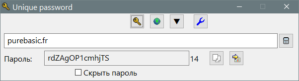
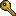

UniquePassword
Назначение
Создаёт уникальный пароль созданный на основе ключевой фразы.

Взаимосвязанные
GenPass
Unique password - создаёт уникальный пароль на основе ключевой фразы и объекта, которому создаётся пароль, например домен сайта, архив rar, то есть можно использовать как имя архива целиком, так и расширение, как общий пароль для архивов rar. Также можно использовать название программ: WhatsApp, Skype и т.д. в комбинации с именем аккаунта. Это позволяет получить пароль имея в наличии только программу, которую всегда можно скачать в интернете. Позволяет не запоминать пароли, не хранить базу паролей. Взломать пароли имея один пароль невозможно, так как нет возможности выполнить обратную конвертацию даже методом подбора. Чтобы сложнее было подбирать пароль методом программной подстановки используйте пароль состоящий не из одного слова, а из фразы, например любимая фраза из стиха или кино, но не популярная для всех. Если задать свои настройки (не использовать выбор по умолчанию), то подбор пароля невозможен, так как много неизвестных.
Кнопки

Задать ключевую фразу - общая фраза для всех паролей
Захватить домен - Захватить домен из ссылки в буфер обмена (домен или имя программы это вторая изменяемая часть ключевой фразы)
▼ - список заготовленных доменов и программ (см. ini-файл)
Открыть ini-файл - для изменения настроек
Копировать пароль - в буфер обмена
Вставить пароль - в предыдущее активное окно методом сворачивания программы и имитации горячей клавиши Ctrl+V